3．无理数的理论
实数系的逻辑结构问题在19世纪后叶被人正视。无理数被认为是主要难点。然而无理数的意义与性质的发展预先假定了有理数系的建立。对无理数理论的不同的贡献者来说，或者认为有理数已为众所确认，无需什么基础，或者只给出一些匆促而临时应付的方案。
足够奇怪的是，无理数理论的建立，除了一个新的观点外，并不需要什么别的新的思想。欧几里得在《原本》第五卷中处理度量的无公度比时，曾对这种比规定了等与不等。他的等式的定义（第4章第5节）相当于把有理数m/n分成两类，一类中的m/n是小于度量a与b的无公度比a/b，另一类中的m/n是大于a/b。欧几里得的逻辑诚然是有缺陷的，因为他根本没有定义一个不可公度的比。再则，欧几里得关于比的理论的发展，两个无公度比的相等，只是在几何上可以适用。尽管如此，他确已具有可以及早用来定义无理数的基本思想了。实际上，戴德金确实利用了欧几里得的工作，并且明白承认了这一点(6)。魏尔斯特拉斯也可能为欧几里得的理论所引导。然而，后知总是比先见容易。因此容易解释为什么欧几里得思想的重新构型的利用竟延迟了很久。负数必须全部被认可，然后才能使整个有理数系成为可用。再则，无理数理论的需要必须被觉察到，而这只有当分析的算术化已经进行到相当程度之后才会发生。
在1833年与1835年，于爱尔兰皇家学会上宣读的两篇论文，并以《代数学作为纯时间的科学》（Algebra as the Science of Pure Time）为题发表的文章中，哈密顿提出了无理数的第一个处理(7)。他把他关于有理数与无理数全体的概念放在时间的基础上，对于数学来说，这个基础是不能令人满意的（虽然康德的许多追随者都认为，这是一个基本的直观）。在提出有理数的理论之后，他引进了把有理数分成两类的思想（这个思想将在联系到戴德金的工作时更充分地描述），并把这样一个划分用来定义一个无理数。但他并没有完成这个工作。
除了上述未完成的工作而外，所有在魏尔斯特拉斯之前引进无理数的人都采用了这样的概念，即无理数是一个以有理数为项的无穷序列的极限。但是这个极限，假如是无理数，在逻辑上是不存在的，除非无理数已经有了定义。康托尔(8)指出，这个逻辑上的错误，由于没有引起后继的困难，所以在相当时间内没有被发觉。从1859年开始的在柏林的讲演中，魏尔斯特拉斯认识到无理数理论的需要，并给出了一个理论。由科萨克（H．Kossak）出版的《算术基本原理》（Die Elemente der Arithmetik，1872），声称要发表这个理论，但被魏尔斯特拉斯否定了。
在1869年，梅雷（Charles Méray，1835—1911）作为数学算术化的革新者以及魏尔斯特拉斯的法国对等人物，在有理数的基础上给出了无理数的一个定义(9)。康托尔也给出了一个理论，并用它来澄清他关于点集的思想，这点集是他在1871年研究傅里叶级数的工作中用到的。在一年之后，海涅的理论和戴德金的理论分别在《数学杂志》（Journal für Mathematik）(10)与《连续性与无理数》（Stetigkeit und irrationale Zahlen）(11)两个出版物上发表了。
无理数的各种理论在实质上是十分类似的；因此我们只限于给出康托尔与戴德金的理论的一些说明。康托尔(12)是从有理数出发的。在他的1883年的文章(13)中，他说（第565页）已经没有必要去讨论有理数，因为这方面的工作已经由格拉斯曼在他的《算术教本》（Lehrbuch der Arithmetik）（1861）和马勒（J．H．T．Muller，1797—1862）在他的《一般算术教本》（Lehrbuch der allgemeinen Arithmetik，1855）中完成了。实际上，这些工作并没有证实是明确的。康托尔在那篇文章中给出了他的无理数理论较详细的内容。他引进了一个新的数类，叫做实数，它包含有理数与无理数。他从有理数序列开始，这种序列满足如下的条件：对于任何一个给定的正有理数ε＞0，序列中除去有限个项以外，彼此相差都小于ε，亦即对于任意的正整数m一致地有
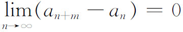
成立。这样的序列他叫做基本序列。每一个这样的序列定义为一个实数，可用b来表示。两个这样的序列
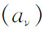
与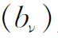
是同一个实数当且仅当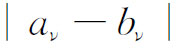
在ν趋向于无穷时趋向于零。对于这样的序列有三种可能的状态出现。给定任何一个正的有理数，序列中的项只要对应的ν充分大，其绝对值就小于这个给定的数；或者，从某一个ν以后，序列中对应的项都大于某一固定的正有理数ρ；或者，从某一个ν以后，序列中对应的项都小于某一固定的负有理数－ρ。在第一种情形b＝0；在第二种情形b＞0；在第三种情形b＜0。
如果
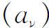
与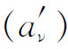
是两个基本序列，记作b与b′，可以证明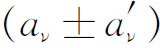
与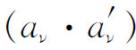
都是基本序列，就分别定义为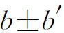
与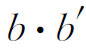
。再则，若b≠0，则除有限项外，序列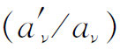
也是一个基本序列，就定义为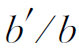
。有理的实数包含在上述实数的定义之内；因为任一序列
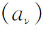
，其中每个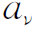
都等于同一有理数a，就定义出这有理实数a。现在可以定义任何两个实数的等与不等。实际上
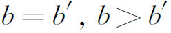
或b＜b′是按照b－b′等于0、大于0或小于0而规定的。以下的定理是重要的。康托尔证明，若
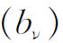
是任一实数序列（有理实数或无理实数），又若对于任意的正整数μ一致地都有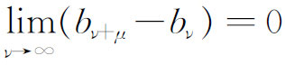
成立，则必存在唯一的一个实数b，它被一个由有理数aν构成的基本序列（aν）所确定，使得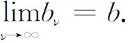
这表明，由实数构成的基本序列并不需要任何更新的类型的数来充当它的极限，因为已经存在的实数已足够提供其极限了。换句话说，从给基本序列（也就是满足柯西收敛准则的序列）提供极限的观点来说，实数系是一个完备系。
戴德金的无理数理论，发表在上面已提到过的他的1872年的书中，但他的思想来源却回溯到1858年。那时需要他开微积分的课程，而他理解到实数系还没有逻辑基础。为要证明单调增加的有界变量趋向于一个极限，他就像其他的作者一样，不得不借助于几何直观（他说，在微积分的初步中仍旧适宜于这样做，特别是对于那些不愿意花很多时间的人）。再则，许多基本的算术定理都没有得到证明。他举了这样的事实，即等式
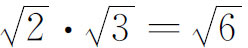
还没有严格地证明过。他接着声明，他预先假定有理数的发展，只对有理数作概括的讨论。为要达到对无理数的认识，他先提出什么叫做几何的连续性。当时的和早些时候的思想家——例如波尔查诺——相信所谓连续就是在任两数之间至少存在一个另外的数。这一性质现在知道是稠密性。但是有理数本身就形成一个稠密集，因此稠密性不是连续性。
戴德金是在直线划分的启发下来定义无理数的。他注意到把直线上的点划分成两类，使一类中的每一个点位于另一类中每一个点的左方，就必有一个且只有一个点产生这个划分。这一事实使得直线是连续的。对于直线来说，这是一个公理。他把这个思想运用到数系上来。戴德金说，让我们考虑任何一个把有理数系分成两类的划分，它使得第一类中的任一数小于第二类中的任一数。他把有理数系的这样一个划分叫做一个分割（cut）。如果用A1与A2表示这两类，则（A1，A2）表示这分割。在一些分割中，或者A1有个最大的数，或者A2有个最小的数；这样的而且只有这样的分割是由一个有理数确定的。
但是存在着不是由有理数确定的分割。假如我们把所有的负有理数以及非负的且平方小于2的有理数放在第一类，把剩下的有理数放在第二类，则这个分割就不是由有理数确定的。通过每一个这样的分割，“我们创造出一个新的无理数α来，它是完全由这个分割确定的。我们说，这个数α对应于这个分割，或产生这个分割”。从而对应于每一个分割存在唯一的一个有理数或无理数。
戴德金在引进无理数时所用的语言，留下一些不完善的地方。他说无理数α对应于这个分割，又为这分割所定义。但他没有说清楚α是从哪儿来的。他应当说，无理数α不过就是这一个分割。事实上，海因里希·韦伯告诉过戴德金这一点，而戴德金在1888年的一封信中却回答说，无理数α并不是分割本身而是某些不同的东西，它对应于这个分割而且产生这个分割。同样，虽然有理数产生分割，它和分割是不一样的。他说，我们有创造这种概念的脑力。
他接着给出一个分割（A1，A2）小于或大于另一分割（B1，B2）的定义。在定义了不等关系之后，他指出实数具有三个可以证明的性质：（1）若α＞β且β＞γ，则α＞γ。（2）若α与γ是两个不同的实数，则存在着无穷多个不同的数位于α与γ之间。（3）若α是任一实数，则实数全体可以分成两类A1与A2，每一类含有无穷多个实数，A1中的每一个数都小于α，而A2中的每一个数都大于α，数α本身可以指定在任一类。实数类现在就具有连续性，他把这个性质表达为：如果实数全体的集合被划分成A1与A2两类，使A1中的每一个数小于A2中所有的数，则必有一个且只有一个数α产生这个划分。
他接着定义实数的运算。分割（A1，A2）与（B1，B2）的加法是这样定义的：设c是任一有理数，如果有a1属于A1，b1属于B1，使
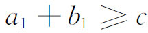
，我们就把c放在类C1中。所有其他的有理数都放在类C2中。这两类数C1与C2构成一个分割（C1，C2），因为C1中的每一个数小于C2中的每一个数。这个分割（C1，C2）就是（A1，A2）与（B1，B2）的和。他说，其他运算可以类似地定义。他现在就能够建立加法和乘法的结合与交换等性质。虽然戴德金的无理数理论，经过上面指出的一些少量修改之后，是完全符合逻辑的，但康托尔认为分割在分析中出现并不自然而加以批评。除以上提到的或描述的以外，关于无理数理论还有另外一些工作。例如沃利斯在1696年曾把有理数与循环小数等同起来。斯托尔兹（Otto Stolz，1842—1905）在他的《一般算术教程》（Vorlesungen über allgemeine Arithmetik）(14)中证明了每一个无理数可以表达成不循环小数，因而这个事实可以用来定义无理数。
从这些不同的处理，可以明显地看出，无理数的逻辑定义是颇有些不自然的。从逻辑上看，一个无理数不是简单的一个符号，或一对符号，像两个整数的比那样，而是一个无穷的集合，如康托尔的基本序列或戴德金的分割。逻辑地定义出来的无理数是一个智慧的怪物。我们可以理解，为什么希腊人和许多后继的数学家都觉得，这样的数难以掌握。
数学的进展并没有博得普遍的赞许。汉克尔他自己是有理数逻辑理论的创始人，却反对无理数的理论(15)：“没有［几何的］度量的概念，形式地去处理无理数的每一个尝试，必然导致最玄奥的和麻烦的人工制作，它们是不会有较高的科学价值的，即使它们能够被完全严密地进行到底的话，何况对此我们完全有权怀疑。”